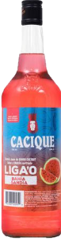

Cacique es una marca de aguardientes hechos a base de caña de azúcar típicos en Costa Rica, propiedad de la estatal Fábrica Nacional de Licores (FANAL).1 Fue lanzada en 1980 y se compone de tres productos: guaro, ron Colorado y ginebra Extraconcha, que se consideran el pilar tradicional de los licores costarricenses.
De sus tres aguardientes, el guaro es el más consumido, debido a que es un espíritu neutro de caña con alta calidad, muy popular y de gran versatilidad, se elabora desde la época colonial. Con la base del guaro mezclada o añadida a diversos aromatizantes e ingredientes se producen las otras dos variedades de Cacique: el Colorado y la Extraconcha, con sabores a ron y ginebra, respectivamente.
El aguardiente de caña Cacique es uno de los mejores del mundo en su tipo, se elabora a partir del guarapo o maleza de la caña de azúcar que se deja fermentar para obtener una base etílica, que posteriormente se madura (no se añeja, solo se deja reposar) alrededor de 10 o 15 años en toneles de roble blanco quemado, lo que permitirá su destilación final para producir el guaro, bastante neutro y de alta pureza, con un ligero sabor dulce resultante del azúcar de la caña. Con este destilado final, añadiendo diversos ingredientes, se elabora también el Colorado y la Extraconcha, que obtienen al concluir el proceso de producción, un gusto a ron ligero y a ginebra de enebro y limón, respectivamente.
De esta forma, los tres licores resultan con una graduación alcohólica de 30°% vol./60ª proof., que por ley debe mantenerse como mínimo en ese volumen, desde 1992.10 Todos pueden encontrarse comercializados en diversas licorerías, bares y supermercados en sus dos presentaciones: de 1 litro en botella de vidrio y de 350 ml en envase plástico (esta última conocida como pacha), además también circula una botella de 750 ml de guaro.13 Por sus características estos productos son sumamente utilizados en coctelería y cocina, para elaborar todo tipo de tragos, platillos y postres.
Para más información sobre actividades relacionadas, haga click aquí